Phuket, Chiang Rai & Bangkok
A relaxed, safe, vegetarian-friendly 10-day trip for two: a beach and a first scuba dive in Phuket, the White Temple and ancient ruins of the north, and Bangkok's palaces, Ayutthaya and Ancient Siam. Planned hour by hour with at least 8 hours of sleep every night. You get dropped at and picked up from Mumbai airport, so that leg isn't counted in the cost.
Get quotes from travel agencies
An agency can book your flights, hotels, airport pickups and drivers, and give you one number to call if anything goes wrong in Thailand. You keep the free time. Tap Message on WhatsApp to open a chat with a short message already typed: who you are, your dates, the cities and that you want budget-friendly options. You can edit it before sending.
See the message that will be sent
Hi, I'm Shripad Agashe. My wife and I are planning our honeymoon in Thailand, 15 to 23/24 Jan 2027, flying from Mumbai. We're thinking Phuket, Chiang Rai and Bangkok: some beach time, a beginner scuba dive and heritage sites. We're vegetarian. I'm looking for budget-friendly options. Could you please share a quote?
Pune & Maharashtra
Veena World
Customised Holidays team · Chinchwad officeBig Maharashtra brand with an office in Chinchwad. Ask for their customised (not group) Thailand honeymoon desk.
WhatsApp +91 89568 48708Call 1800 22 7979
Kesari Tours
Tailormade desk · many Pune branchesAsk for “Kesari Tailormade” so you get a private trip, not a group tour.
WhatsApp +91 99303 30066Call 1800 266 9080
Parrot Vacations
Viman Nagar, PuneSmall Pune agency offering custom Thailand trips with vegetarian meals and Hindi/Marathi-speaking guides. Few online reviews, so check them carefully.
WhatsApp +91 91136 18706Call +91 91136 18706
All-India
Thomas Cook India
Individual customised tours · Pune branchesLarge, long-established company. Their Pune Camp branch has many good reviews.
WhatsApp +91 88791 42236Call 1800 2099 100
Pickyourtrail
Fully custom, planner-led tripsBuilt for custom trips like yours. Some reviews say hotels were below the promised category, so get hotel names in writing.
WhatsApp +91 63693 02849Call +91 92402 04872
Thailand-based
TripThaiTour
Bangkok · Hindi-speaking guidesBangkok ground operator for Indian travellers. States TAT licence 14/04232. Mostly works with agents, but you can ask for a direct quote.
WhatsApp +66 89 949 6235Call +66 89 949 6235
Explera DMC
Thailand · veg and Jain kitchensThai ground operator for the Indian market, covers Chiang Rai. States TAT licence 14/05119. Mainly B2B, so they may refer you to a partner.
WhatsApp +66 93 656 8090Call +66 93 656 8090
Also worth a call (no WhatsApp listed): SOTC 1800 209 3344. Each WhatsApp number above appears on the agency's own website (checked 18 Nov 2026).
Ask every agency
- The exact hotel names and room type, in writing.
- Who runs the trip on the ground in Thailand, and a 24/7 Thai phone number.
- Which flights are included, and whether checked bags are included.
- Whether pickups and drivers are private (not shared vans).
- The cancellation and change rules, and when payment is due.
- The final price including 5% GST and TCS.
Compare quotes fairly
- Get 3–4 quotes for the same hotels and route.
- Check a quote against the budget below. Paying 10–15% more than doing it yourself is normal for the convenience.
- Pay by card or bank transfer to the company's account, never a personal one.
- On packages, Indian agencies add 5% GST and TCS (2% from April 2026; you can claim TCS back in your tax return).
The route
Times are Thailand time (1h 30m ahead of India) unless marked IST, and match real flights on sale now.
Scuba diving: what it costs
Discover Scuba Diving, Phuket (Day 2)
- A beginner's try-dive: no licence needed. An instructor stays beside you, down to about 12 m.
- Day trip to Racha Yai island with 2 dives, lunch, gear and hotel pickup.
- ≈ 3,800–6,500 THB per person, typically ≈ 4,500 THB. For two: ≈ ₹24,000.
- Choose a PADI 5-star dive centre and read recent reviews.
Before you book
- You fill in a medical form. Asthma, heart or ear problems, a cold, or pregnancy can rule out diving, so check with a doctor first.
- No flying for 18–24 hours after diving. Your next flight is 2 days later.
- Many Indian travel policies exclude scuba; buy the add-on.
- January wind can cancel boats; Day 3 can swap with Day 2.
Hour-by-hour plan
Every "Photos ↗" link opens more photos of that place in Google Images.
Phuket · Kata Beach
Beach, scuba, Phuket's templesDay 1 Fri 15 Jan · Fly Mumbai → Phuket
8 h sleep
Day 2 Sat 16 Jan · Scuba diving at Racha Yai island
9 h sleep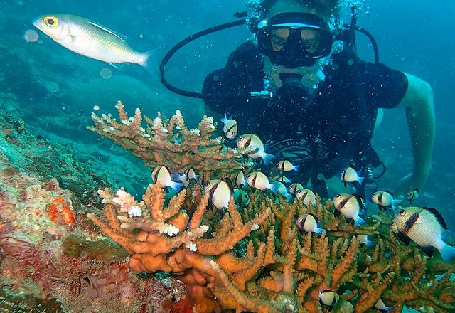
Day 3 Sun 17 Jan · Wat Chalong, Big Buddha, Old Town
8 h sleep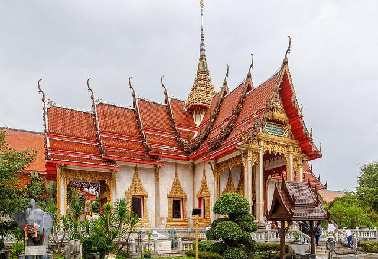

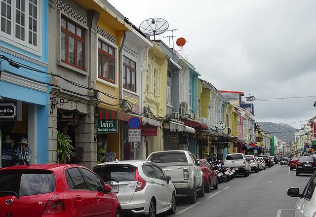
Chiang Rai
The White Temple and the ancient northDay 4 Mon 18 Jan · Fly to Chiang Rai, Blue Temple at sunset
9 h sleep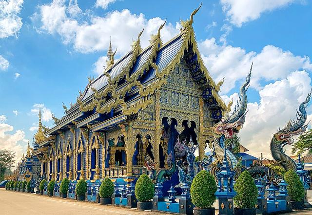
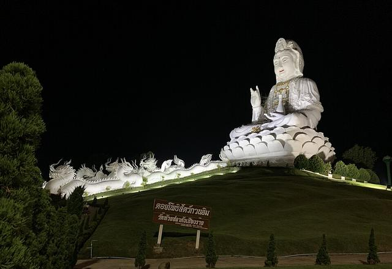
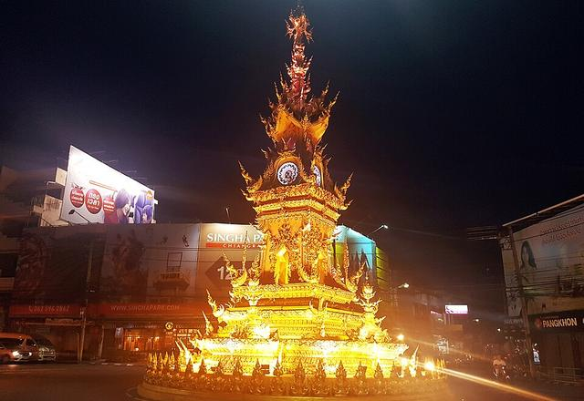
Day 5 Tue 19 Jan · White Temple, Black House, old Chiang Rai
9 h sleep
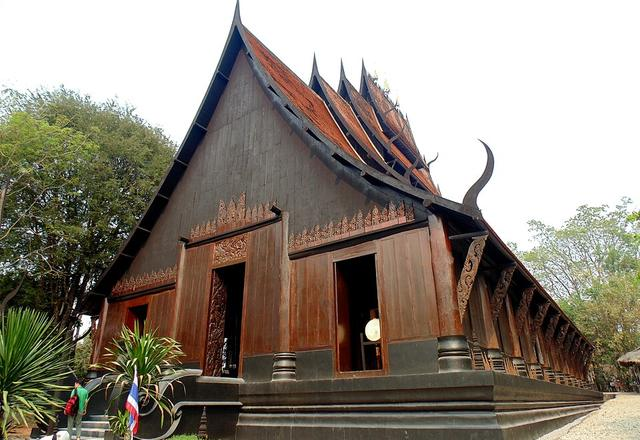
Day 6 Wed 20 Jan · Ancient Chiang Saen, Golden Triangle, fly to Bangkok
8.5 h sleep
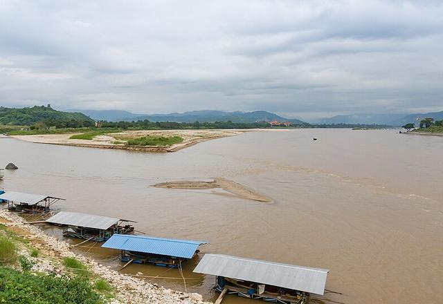
Bangkok · Sukhumvit
Grand Palace, Ayutthaya, Ancient SiamDay 7 Thu 21 Jan · Grand Palace, Wat Pho, Khon dance
9 h sleep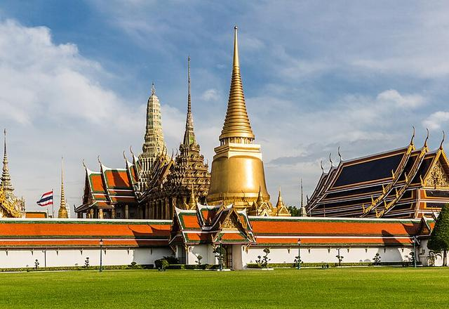


Day 8 Fri 22 Jan · Ayutthaya, the old royal capital
9.5 h sleep


Day 9 Sat 23 Jan · Ancient Siam, Erawan Museum, Erawan Shrine
9 h sleep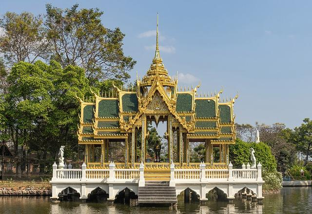


Day 10 Sun 24 Jan · Wat Arun, fly home
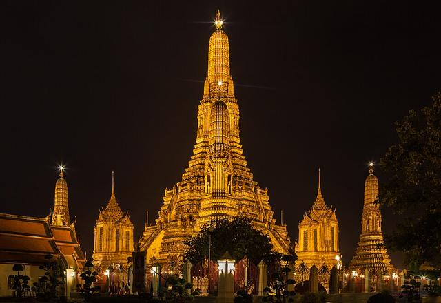

Where to stay
Examples to ask agencies about, or book yourself. Prices are January estimates per night; many Thai hotels quote prices “++”, which adds about 17% service charge and VAT, so check the final total.
Sugar Marina Resort – Art, Kata
≈ ₹5–8k / nightGood value, a short walk to Kata Beach. Dive shops pick up here.
Upgrade: Chanalai Romantica (adults only, veg breakfast).
Le Patta Hotel Chiang Rai
≈ ₹3–4.5k / nightCentral, walking distance to the Clock Tower and Night Bazaar.
Upgrade: The Riverie by Katathani (riverside resort).
Holiday Inn Express Sukhumvit 11
≈ ₹5–7k / nightBreakfast included. On the street with the most Indian veg restaurants, near Nana Skytrain station.
Upgrade: Aloft Sukhumvit 11 (same street, rooftop pool).
Budget for two, reviewed
Three independent AI reviewers checked the earlier ₹2.05 lakh budget, and all three said it was too low. The main gaps were flights, peak-season hotels, food and small daily extras. This version uses the real flight prices above and their combined estimates.
| Item | Notes | Likely | Range |
|---|---|---|---|
| All four flights | Live fares above, plus checked bags and seats | ₹90,000 | ₹85–105k |
| Hotels, 9 nights | With breakfast, service charge and VAT | ₹58,000 | ₹45–80k |
| Scuba for two | Discover Scuba, 2 dives each | ₹24,000 | ₹20–33k |
| Vegetarian meals | ≈ 1,200 THB a day for two | ₹30,000 | ₹23–40k |
| Entry fees & show | Grand Palace, Ancient Siam (800 THB each), White Temple (200 THB each) and the rest | ₹20,000 | ₹17–24k |
| Grab, Skytrain, airport rides | Phuket airport rides are the expensive ones | ₹19,000 | ₹15–25k |
| Two day drivers | Chiang Saen & Golden Triangle, Ayutthaya | ₹16,000 | ₹14–20k |
| Daily extras | Water, snacks, laundry, forex and ATM fees, one massage, one special dinner | ₹15,000 | ₹10–20k |
| Insurance with dive cover, eSIM, tips | ₹8,000 | ₹6–11k | |
| Safety buffer | About 8%, for price rises and surprises | ₹23,000 | — |
| Total | Shopping not included | ≈ ₹3.0 L | ₹2.5–3.8 L |
Booking through an agency adds 5% GST and 2% TCS on the package, plus their margin (usually inside the price). TCS can be claimed back in your tax return.
Ways to bring it down
- Come home on Sat 23 Jan: one less hotel night and a cheaper flight, saves ≈ ₹8–10k.
- Only one of you dives, the other snorkels: saves ≈ ₹8–10k.
- Simpler 3-star hotels: saves ≈ ₹10–15k.
- Skip Chiang Rai (Phuket and Bangkok only, with Ayutthaya and Ancient Siam): saves ≈ ₹25–30k.
- With all of these, the trip comes to about ₹2.3–2.5 lakh.
Flight prices for two
| Flight | Best option found | Both of you |
|---|---|---|
| Mumbai → Phuket Fri 15 Jan | IndiGo nonstop, 1:15 → 7:15 pm Akasa Air 9:20 am → 3:35 pm: ₹41,146 | ₹29,854 |
| Phuket → Chiang Rai Mon 18 Jan | Thai VietJet nonstop, 8:30 → 10:35 am The only nonstop; others change in Bangkok | ₹13,796 |
| Chiang Rai → Bangkok Wed 20 Jan | Thai AirAsia nonstop, 4:10 → 5:30 pm (DMK) Many nonstops all day, ₹9,500–13,100 | ₹10,182 |
| Bangkok → Mumbai Sun 24 Jan | Thai VietJet nonstop, 8:40 → 11:50 pm IndiGo 8:20 am: ₹32,658 · Air India 8:40 pm: ₹40,512 · Sat 23 Jan: from ₹28,895 | ₹31,316 |
| All four flights | Fares as checked; checked bags on VietJet and AirAsia cost extra | ≈ ₹85,000 |
Prices from Google Flights on 18 Nov 2026, including taxes, for 2 adults. Fares change daily and Google rated Mumbai → Phuket as “currently high”. Book soon.
Places you'll see
More photos of each place: use the "Photos ↗" links in the day plan.


Vegetarian food guide
Say this
- Gin jay กินเจ: I eat "jay" (vegan: no meat, egg or fish sauce, often no onion or garlic)
- Mai sai nuea sat ไม่ใส่เนื้อสัตว์: no meat
- Mai sai nam pla ไม่ใส่น้ำปลา: no fish sauce
- Mai sai khai ไม่ใส่ไข่: no egg
- Mai phet ไม่เผ็ด: not spicy
Look for yellow flags with red Thai letters (เจ). They mark vegan "jay" food stalls.
Safe orders
- Pad pak ruam: stir-fried mixed vegetables
- Pineapple or vegetable fried rice (say no egg if needed)
- Pad Thai jay: tofu, no fish sauce, no egg
- Mango sticky rice, coconut ice cream, fresh fruit
Apps: HappyCow (veg restaurants near you), Google Translate with Thai downloaded for offline use, Grab (taxis and food delivery).
Money
US dollar account
- Thai money changers such as SuperRich and Vasu give very good rates for USD cash. Bring clean, undamaged $100 or $50 notes.
- A US debit card works well at ATMs if your bank charges no foreign transaction fee. Thai ATMs charge ≈ 220 THB per withdrawal, so take out larger amounts less often.
INR side
- A forex card or a zero-markup credit card works for hotels and malls. Normal Indian cards add about 3.5% plus GST on foreign payments.
- Agency packages add 5% GST and 2% TCS (from April 2026). TCS is not a cost: you claim it back in your tax return.
This is general travel-money information, not financial advice.
Booking checklist
Ticks are saved in this browser only.
Now · by 30 Nov 2026
By 15 Dec 2026
Early January 2027
12–14 Jan 2027
Packing & safety
Pack
- Light cotton clothes, swimwear, a cover-up
- A light jacket or sweater each for Chiang Rai (around 15°C on January mornings and evenings)
- One modest outfit each for temples (shoulders and knees covered)
- Reef-safe sunscreen, sunglasses, a hat
- Waterproof phone pouch, flip-flops, a light dry bag
- Thai sockets take Indian two-pin plugs; a universal adapter is safer
- Basic medicines (motion sickness tablets for boats)
Stay safe
- Use Grab or Bolt instead of street tuk-tuks.
- Don't rent scooters without an International Driving Permit. Insurance won't cover accidents.
- Skip jet-ski rentals, which are a common damage scam.
- Swim only where there are flags and lifeguards.
- Keep passports in the hotel safe and carry copies.
| Emergency | Number |
|---|---|
| Tourist Police (speaks English) | 1155 |
| Ambulance | 1669 |
| Embassy of India, Bangkok | +66 2 258 0300 |
Photo credits
Photos from Wikimedia Commons, cropped and resized. Licences: CC BY, CC BY-SA or public domain.
Airport sculpture: photo by Kurun (talk), CC BY-SA 3.0
Ancient Siam: photo by iMahesh, CC BY-SA 4.0
Big Buddha: photo by Subhrajyoti07, CC BY-SA 4.0
Black House (Baan Dam): photo by Szwendam się, CC BY-SA 4.0
Blue Temple: photo by Chainwit., CC BY-SA 4.0
Chiang Rai Clock Tower: photo by Index Librorum Permissorum, CC0
Discover Scuba: photo by Weldon Kennedy from London, UK, CC BY 2.0
Erawan Museum: photo by mohigan, CC BY-SA 3.0
Erawan Shrine: photo by Mr.Peerapong Prasutr, CC BY-SA 4.0
Golden Triangle, Mekong: photo by CEphoto, Uwe Aranas, CC BY-SA 3.0
Grand Palace: photo by Original image: Ninara from Helsinki, Finland. Edit: TSP, CC BY 4.0
Kata Beach: photo by ADwarf, Public domain
Khon masked dance: photo by Saerin, CC BY-SA 3.0
Palace murals: photo by Jorge Láscar from Australia, CC BY 2.0
Phuket Old Town: photo by Christophe95, CC BY-SA 4.0
Sri Maha Mariamman: photo by Adam Jones, CC BY-SA 2.0
Top banner: photo by Don Ramey Logan, CC BY 3.0
Wat Arun: photo by Diego Delso, CC BY-SA 3.0
Wat Chaiwatthanaram: photo by JJ Harrison (https://www.jjharrison.com.au/), CC BY-SA 3.0
Wat Chalong: photo by CEphoto, Uwe Aranas, CC BY-SA 4.0
Wat Huay Pla Kang: photo by Chainwit., CC BY-SA 4.0
Wat Mahathat, Ayutthaya: photo by No(0)GoodNamesLeft, CC BY-SA 4.0
Wat Pa Sak, Chiang Saen: photo by Chainwit., CC BY 4.0
Wat Pho: photo by Diego Delso, CC BY-SA 3.0
Wat Phra Si Sanphet: photo by This Photo was taken by Supanut Arunoprayote. Feel free to use any of, CC BY 4.0
White Temple (Wat Rong Khun): photo by Chainwit., CC BY 4.0